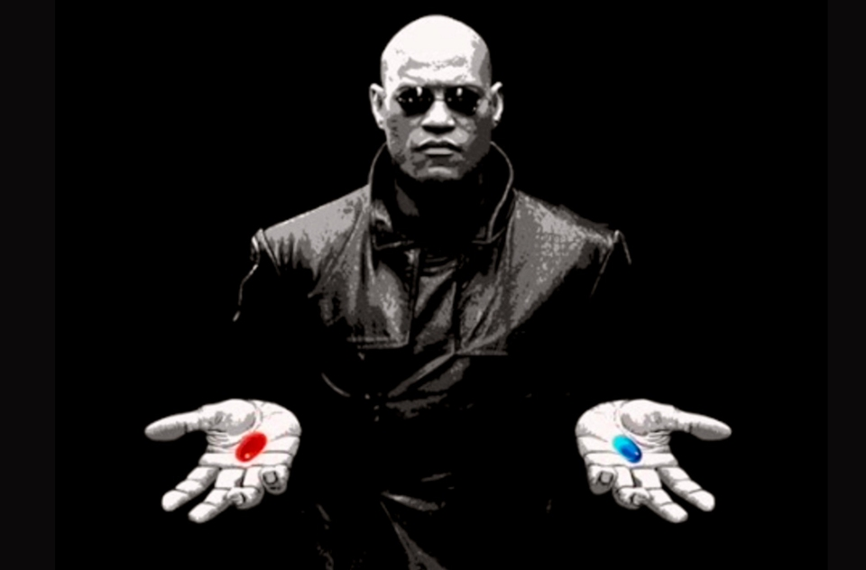

The Matrix (1999, Warner Bros.) — buy the platform or build your own?
The maritime technology stack is under more structural pressure than at any point since the industry moved from telex to email. Not because the platforms are failing — most of them work fine for what they were designed to do — but because the assumptions underneath them are eroding faster than anyone expected.
The question is not whether AI will reshape maritime software. It already is. The question is which platforms adapt, which ones get absorbed into the baseline, and which ones become the next generation’s cautionary tale about paying rent on capabilities you could own.
This is not a technology argument. It is a business strategy argument. And the decisions being made — or deferred — in maritime C-suites right now will determine which organizations spend the next five years building competitive advantage and which ones spend it managing vendor dependency.
The Current Stack: What Maritime Companies Actually Pay For
A mid-size maritime operation in 2026 — whether a shipowner, charterer, terminal operator, or commercial agent — is typically running some combination of the following: a voyage management system (Veson IMOS, Dataloy, Q88), an email management or collaboration layer (Sedna, or more commonly just Outlook with shared mailboxes), a disbursement and port cost platform (DA-Desk, Marcura), vessel tracking (MarineTraffic, VesselFinder, Kpler), fleet performance monitoring (one of several), accounting software (various), and a scattering of Excel spreadsheets that quietly hold the operation together.
Consider a representative large shipowner — 350+ vessels, roughly 1,000 employees across global offices. Each vessel averages a port call every three to four weeks. That is somewhere north of 5,000 port calls per year. The combined annual spend across the maritime-specific stack (voyage management, email platform, disbursement processing priced per port call), the enterprise layer (Microsoft 365, CRM, ERP/accounting), and the integration middleware and IT administration required to connect them plausibly falls in the range of $4 million to $6 million annually — and that is before factoring in the cost of switching if any one of these platforms fails, is acquired, or becomes obsolete. None of these figures are published. Maritime SaaS vendors do not disclose pricing, and the actual cost varies with fleet size, user count, port call volume, and negotiated terms. But the order of magnitude is not speculative. It is the structural cost of the current stack.
None of these systems talk to each other natively. The human operator remains the integration layer — reading from one, typing into another, copying data between them, composing notifications manually. A single ETA change on a vessel can require the same data point to be entered or communicated four to seven times across different platforms. Multiply that across a fleet or a port with dozens of active calls, and you begin to see where the hours go.
This is the environment that maritime SaaS was built to address. And to be fair, it did address parts of it. The question is whether that partial solution justifies the ongoing cost, now that something more fundamental has changed.
The Three Forces Compressing Maritime SaaS
Force 1: The platform vendors are building up.
Microsoft 365 Copilot now summarizes email threads, works in shared mailboxes, classifies messages, drafts replies, and searches across email, Teams, and SharePoint simultaneously. Power Automate can build classification agents, auto-tag incoming mail, route documents, and trigger workflows — all configurable without code. Google Workspace is doing the same with Gemini integration.
These are not future capabilities. They are shipping now, included in licenses most maritime companies already hold. When the platform you sit on top of starts delivering your core features natively, your value proposition compresses to whatever the platform cannot do. For maritime email management, that compression is already well underway. For workflow automation more broadly, it is accelerating.
Force 2: Large language models have commoditized the intelligence layer.
The ability to read an unstructured email, extract structured data from it (vessel name, ETA, berth number, cargo quantity, counterparty), classify intent, and generate a contextually appropriate response — this was a genuine technical moat as recently as 2023. It is a commodity capability in 2026. Claude, GPT, Gemini — any of them can do this out of the box. The cost per email processed has dropped to fractions of a cent.
What this means for maritime SaaS: any platform whose core value proposition rests on parsing, classifying, or summarizing maritime communications is competing against a capability that is now available as infrastructure. The analogy is cloud storage — once Dropbox’s entire value proposition, now a feature buried in every operating system.
Force 3: The build economics have inverted.
The traditional argument against building custom software was that it required large engineering teams, years of development, and millions in capital. That argument was valid. It is no longer valid. AI-assisted development tools have compressed the build cycle by an order of magnitude. A domain expert who understands maritime operations can now architect and build production-quality systems using tools like Claude Code, Cursor, and the Model Context Protocol — the universal integration standard now backed by Anthropic, OpenAI, Google, Microsoft, and governed by the Linux Foundation.
The practical consequence: a mid-size maritime operation can build a custom intelligence layer — connecting its existing email, accounting, vessel tracking, and operations systems — for roughly the same cost as three years of SaaS subscriptions. Except at the end of three years, the SaaS subscriber owns nothing, and the builder owns an asset that improves with use.
Who Is Pivoting and How
The smarter platforms see this coming and are moving. The moves themselves are revealing.
Sedna
Sedna raised $86 million in equity plus €10 million in venture debt, then executed four acquisitions in under twelve months — Nordic IT (400 legacy customers), CompassAir (workflow automation), Flytta (AI engineering talent from Casper Shipping), and Dataloy Systems (500+ voyage management customers including Golden Ocean and Stena Bulk). The pivot from “maritime email management” to “The OS for Shipping” is explicit. Sedna is betting that the email layer alone cannot justify the capital invested, and that owning voyage management, AI capability, and a large customer base creates a more defensible position.
Whether this works depends on execution. Integrating four acquisitions with a relatively lean engineering team, migrating legacy customers from low-cost contracts to premium pricing, and competing credibly in voyage management against established players like Veson IMOS — all simultaneously — is an ambitious operational challenge. The Marcura partnership announced in mid-2025 is a signal worth watching: the largest maritime back-office platform in the world chose to integrate with Sedna rather than build or acquire its own email layer. That validates the product, but it also implies Marcura views email management as a feature worth connecting to, not a category worth owning.
Marcura
Marcura itself is executing a different version of the same strategy. Backed by Marlin Equity Partners, with over $326 million in revenue and 1,000+ employees, Marcura has been on its own acquisition run — ShipServ, VesselMan, HubSE, Shipster, Brightwell — assembling a maritime back-office platform spanning procurement, payments, crew management, and port cost intelligence. Marcura’s bet is that the transaction layer (paying for things, managing costs, processing invoices) is more defensible than the communication layer. Given that they handle over $21 billion in maritime payments annually, they may be right.
Veson Nautical
Veson continues to deepen its position in voyage management and commercial operations, expanding into fleet performance, trade analytics, and data integration. Veson’s moat is genuine — deep integration into charterers’ and operators’ commercial workflows, years of domain-specific refinement, and a customer base that has built institutional processes around the platform. Of the major maritime SaaS players, Veson arguably faces the least near-term disruption, because voyage management requires a level of domain logic that generic AI cannot replicate easily. But “near-term” is doing work in that sentence. The same AI tools that commoditized email classification will eventually reach voyage estimation and charter party analysis.
The platforms that are not visibly pivoting
The legacy agency management systems, the port operations tools, the single-function dashboards — these face the most acute risk. Not because they will disappear tomorrow, but because the cost of maintaining them becomes harder to justify each quarter as the capabilities they provide become available through more general tools at lower cost.
Where the Moat Still Holds
An honest analysis requires acknowledging where maritime SaaS retains genuine defensible value.
Pre-built domain integrations are expensive to replicate. Sedna’s connections to Veson IMOS, Q88, Abraxa, Marcura’s ClaimsHub and DA-Desk; Veson’s integration with market data feeds, counterparty systems, and compliance databases; Marcura’s connections across thousands of port cost suppliers — these represent years of API development and commercial relationships. A company building internally would need to develop these connections or find alternatives.
Accumulated domain logic is the deepest moat. The way Veson handles laytime calculations, or how DA-Desk structures disbursement workflows, or how Sedna’s tag taxonomy reflects the actual shape of maritime communication — these are not things a general-purpose AI can replicate from first principles. They encode thousands of hours of feedback from practitioners who know which edge cases matter.
Switching costs are real. Organizations that have built years of operational data, workflow habits, and institutional knowledge inside a platform face genuine friction in leaving. This is not a trivial consideration, and any analysis that ignores it is not being honest.
The industry is conservative. Maritime adopts technology slowly. Many organizations lack internal technical capability and genuinely need managed, turnkey solutions. For these companies, the SaaS convenience premium is not a tax — it is a necessity.
Where the Moat Is Illusory
Equally, some of what passes for defensibility is weaker than it appears.
Email classification and parsing is no longer a product category. It is a feature. Any organization with access to a large language model and a competent implementer can classify, tag, and route maritime email. The fact that Sedna does this with a polished maritime-specific interface is a UX advantage, not a technology moat.
Dashboard and reporting layers are similarly commoditized. Building a dashboard that displays vessel positions, schedule status, or cost breakdowns is a solved problem with open-source tools. The value was never in the dashboard — it was in knowing which data to put on it and why. That is domain knowledge, not software.
Data aggregation without interpretation — collecting AIS feeds, market data, or regulatory filings and presenting them through a proprietary interface — faces pressure from the same commoditization dynamic. The data sources are publicly accessible. The aggregation technology is standard. The interpretation and contextualization remain valuable, but they are a human capability, not a software capability.
The Red Ocean Problem: When Everyone Runs the Same Stack
There is a strategic consequence to shared platform adoption that rarely makes it into technology discussions but should be central to them.
When every charterer runs Veson, every agent uses the same email platform, every terminal subscribes to the same AIS feed, and every disbursement flows through DA-Desk — the entire competitive field is operating on identical infrastructure, identical data structures, and identical analytical capabilities. Nobody has an information advantage. Nobody has a process advantage. The platform vendor captured all the differentiation value and redistributed it equally across every paying customer. That is the textbook definition of a red ocean: competing on the same dimensions, with the same tools, for the same customers, where the only differentiators left are price, relationships, and geography.
The SaaS platforms did not create the red ocean in maritime. But they cemented it.
The deeper problem is what happens to institutional knowledge. Every maritime company accumulates operational experience that is specific to its ports, its trade lanes, its counterparty relationships, and its risk tolerance. The senior operator who knows that a particular berth has an undocumented restriction during spring tides, or that a specific surveyor’s figures consistently run 2% high, or that a terminal’s actual gate closure is thirty minutes before the published time — that knowledge is the compound interest of decades of operations. It is genuinely valuable. And in a SaaS platform, it has nowhere to live.
Standardized platforms flatten operational knowledge into generic templates, generic fields, and generic workflows. What is specific to your company gets compressed into what is common to every company. The knowledge stays in people’s heads, gets passed down verbally, and walks out the door when they retire. Meanwhile, every interaction your team has with the platform — every workflow pattern, every data point, every usage signal — feeds back into the vendor’s product development. Your operational experience improves their product. They sell that improved product to your competitors at the same price. You are subsidizing your competition’s capability development with your own institutional knowledge.
And you cannot leverage what you cannot access. Your company may have decades of voyage histories, port cost patterns, vendor performance data, and counterparty behavior embedded in these platforms. But the data is structured in the vendor’s schema, queryable only through the vendor’s interface, exportable only in whatever format the vendor allows. Your own operational experience is locked behind someone else’s access layer. You are paying rent on your own knowledge.
This gets worse when you account for the full stack. Maritime SaaS is not the only layer. On top of the industry-specific platforms sit the enterprise systems — NetSuite, SAP, Salesforce, Dynamics — each one another schema, another login, another destination for the same data. And beneath all of it, the actual human communication is fragmenting across email, WhatsApp, Teams, iMessage, and phone calls simultaneously. A shipping professional in 2026 is routinely monitoring four or more communication channels at once, on two monitors or one oversized display, toggling between tabs at a pace that would have been unrecognizable a generation ago.
The fundamental irony is this: the core data points in shipping have not changed in decades. Some have origins in antiquity. Vessel. Port. Cargo. Quantity. Draft. ETA. Berth. These are the atoms of maritime commerce. They were the same when they moved on paper carried by hand, read by one mind at a manageable pace. What changed is not the data — it is the scattering. The same ancient data points are now labeled in dozens of ways, presented in hundreds of formats, arriving through multiple channels, and requiring entry into multiple systems.
The SaaS answer was to build boxes to organize the flow. And the boxes work — as far as they go. But what actually happened is that each box became another destination the same data must reach, in the format that particular box demands. The human operator remains the integration layer, manually moving information between systems that do not talk to each other. We did not solve the transposition problem. We multiplied the number of places the transposition must happen.
This is where AI represents a structural break, not an incremental improvement. A language model does not need data to arrive in a specific format, through a specific channel, in a specific schema. It can read an ETA update whether it arrives as an email, a WhatsApp message, a Teams notification, or a scanned PDF. It can harmonize “MV OCEAN STAR,” “M/V Ocean Star,” “OCEAN STAR V.23-047,” and “the vessel” into the same entity without a mapping table. It synthesizes across formats and channels because understanding unstructured information in any presentation is what these models were built to do — without the infrastructure-heavy investment and specialized programming that traditional integration demanded.
The company that builds its own intelligence layer — custom to its operations, trained on its own institutional knowledge, capturing every operational decision and edge case in a system that compounds with use — creates something a competitor cannot purchase from a vendor. That is the blue ocean move. Not because the market changes, but because the capability becomes proprietary. And the people who build and refine that system become genuinely indispensable, because their knowledge is encoded in an asset that grows more valuable over time rather than being flattened into a generic platform that serves everyone identically.
What C-Suite Leadership Should Actually Be Thinking About
The strategic error most maritime organizations make is framing this as a technology decision. It is not. It is an organizational capability question: does your company have the ability to convert its own operational knowledge into structured intelligence, or are you dependent on vendors to do that for you?
First, audit your actual dependency. How many of your current SaaS platforms are delivering capabilities that Microsoft 365 or Google Workspace now provide natively? How many are holding data you could not access if you terminated the contract tomorrow? How many are genuinely doing something that cannot be replicated with current AI tools? The answers may be uncomfortable.
Second, own your data architecture. Regardless of which platforms you use, ensure that your operational data — email, vessel schedules, cost records, compliance documentation — is accessible, exportable, and not locked inside proprietary formats. The single most important strategic move is ensuring you can switch tools without losing institutional knowledge.
Third, stop buying point solutions for problems AI can solve. Before signing the next SaaS contract, ask whether the capability could be built internally using AI tools that already exist. Not everything can. Domain-specific platforms with deep integration logic and years of refinement still justify their cost. But the default assumption should no longer be “buy first.”
Fourth, recognize the capability gap. The reason most maritime organizations cannot execute on the build option is not that the technology is unavailable. It is that they lack the person who bridges deep operational knowledge with AI implementation capability. Data scientists do not understand why a specific berth assignment has downstream commercial consequences. Operations managers do not know how to architect an intelligence pipeline. The gap between these two worlds is where value is created — or lost.
Fifth, think in three-to-five-year arcs, not annual renewals. The maritime SaaS landscape in 2029 will look nothing like 2026. Platforms will consolidate. Some will be acquired. Some will fail. The AI capability baseline will continue to rise, compressing the value proposition of any platform that does not continuously move up the intelligence stack. Position your organization to benefit from this shift rather than be disrupted by it.
The Honest Answer
Will maritime SaaS survive the AI transformation? Some of it will. The platforms that combine deep domain logic with genuine integration value and continuous AI adoption will evolve and potentially strengthen. Veson’s position in voyage management, Marcura’s position in maritime payments and procurement, Kpler’s position in commodity intelligence — these are defensible because they encode domain knowledge that takes years to accumulate and cannot be commoditized overnight.
The platforms that primarily aggregate data, manage email, or provide workflow digitization without deep domain logic face existential pressure. Not tomorrow. Not next quarter. But within a three-to-five-year window that is shorter than most vendor contracts.
The organizations that will navigate this best are the ones that start building internal AI capability now — not by hiring a team of data scientists who do not understand shipping, and not by buying another platform that adds another silo. By finding or developing the rare combination of operational depth and technical capability that turns their own institutional knowledge into a compounding asset.
That capability is the moat. Not the software. The software is a tool. The moat is the knowledge of what to build, why it matters, and how it connects to the commercial decisions that actually drive the business.
The companies that understand this will spend the next five years building something their competitors cannot buy. The ones that do not will keep paying rent on their own knowledge, running the same stack as everyone else, and wondering why the service they deliver looks exactly like the company across the port.
• • •